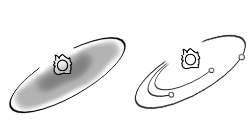
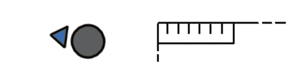
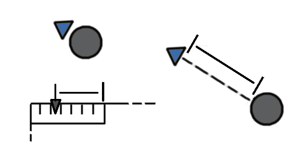
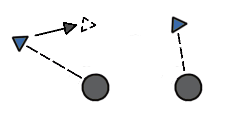
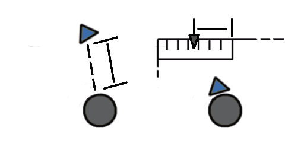

Действие данного варгейма происходит в трёхмерном пространстве космического вакуума. Так почему же мы используем лишь стол, не учитывая третье измерение?
Во-первых, Большая часть игровых ситуаций, которые произошли бы в варгейме, с некоторыми упрощениями могли бы без особых потерь проецироваться на определённую плоскость
Да, некоторые детали будут передаваться неточно или скрадываться. Но общий ход боя будет передаваться достаточно точно без "честного 3Д", в то время как усложения правил для дополнения третьего измерения будут неоправданно громоздкими.

Во-вторых, у звёздных систем, в масштабе которых проходят бои в нашей игре, есть естественная плоскость, в которой расположено большинство планет и твёрдых тел - бывший протопланетный диск, из которого материал собирается в планеты вокруг звезды.
В этой плоскости чаще всего и находятся все те точки интереса, за которые сражаются корабли - населённые планеты, станции, навигационные маяки. богатые минералами пояса астероидов.

Всё в космосе движется. Если и есть кажущееся спокойствие - то лишь относительно условных точек отсчёта. Такая движущаяся в пространстве область и моделируется нами.
Однако, не смотря на то, что некоторые элементы относительно неё можно считать неподвижными (крупные планеты, астенроиды и.т.д.), большиинство же тел обладают своими относительными ей скоростями, слишком большими, чтобы ими пренебрегать.
Что же такое скорость в рамках данной игры? Скорость - это участок пути. которую объект проделает по столу за выделенный для этого момент
Так как симуляция движения достаточно сложная, будет использоваться два элемента:
Первый: направленный маркер, который обычно прикладывается к базе/жетону движущегося тела на столе. Это будет направление скорости
Второй: шкала скорости, которая располагается на карточке объекта. Это будет модуль скорости.

Часть объектов не требует маркеров движения для симуляции направления скорости. Однако в таком случае на тех жлементах на столе, что их отображают, указано направление - оно и будет считаться направлением их скорости
Отсутствие же отдельного маркера скорости для них обосновано тем что их ориентацией относительно направления движения можно спокойно пренебречь.
Хоть в большинстве случаев скорость в космосе и кажется неизменной, множественные источники сил неустанно влияют на космические тела в разных направлениях.
Их влияние может быть сложным, многогранным и запутанным, двигать вектор скорости в неожиданных направлениях спустя долгие промежутки времени.
Как это работает в данной настольной игре? Прежде чем начать применять ускорения к скорости объекта, отодвиньте его маркер скорости в отмеченном этим же маркером направлении на расстояние, отмеченное на шкале скорости объекта.

Далее начните двигать маркер согласно ситуации на столе. Собственно, ускорение - это то на какое расстояние и в каком направлении перемещается маркер скорости
Ускорения применяются последовательно согласно очерёдности правил, их вызывающих.

после применения всех наложенных ускорений отметьте новый модуль скорости на шкале объекта и придвиньте маркер скорости обратно по прямой линии к базе/жетону объекта, отметив новый угол скорости.

Если у объекта не предусмотрено отдельного маркера скорости, можете использоватьлюбой подходящий по размеру предмет заместо него. Перед началом действий просто приложите выбранный предмет к отмеченному "переду" токена/базы объекта, а затем действуйте с ним как с обычным маркером скорости
В конце же поверните маркер объекта по направлению нового вектора скорости.
Если же у объекта нет шкалы скорости, в соответствующую фазу двигайте его собственный токен/миниатюру. Впрочем, некоторым объектам ускорения могут не применяться вовсе - они просто двигаются согласно их собственным правилам, либо остаются неподвижны на столе.
Как уже упоминалось ранее, помимо того, куда движется объект, часто важно, куда он в нужный момент времени ещё и направлен. ориентация в пространстве и направление движения объектов в космосе чаще всего не совпадают.
Для начала отметим, что у всех элементов на столе, угол поворота которым нам важен, должен быть чётко видимый "перед". На миниатюрах это обычно то направление, в котором смотрит сам скульпт.
В альтернативном варианте направление переда может быть отмечено на базе, например, если сама миниатюра по задумке смотрит в другую сторону, либо её переднее направление в целом сложно разобрать.
Токены или жетоны обычно имеют пропечатанное направление, либо имеют направленную форму с чётко видимым передом